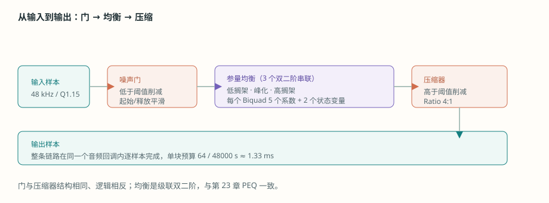
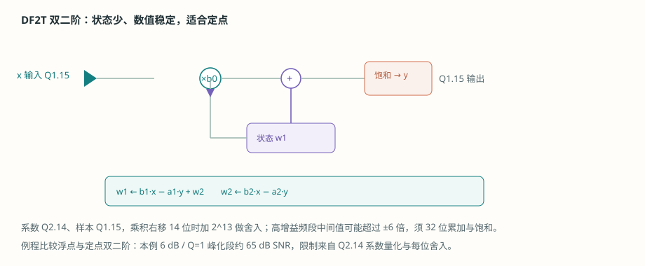
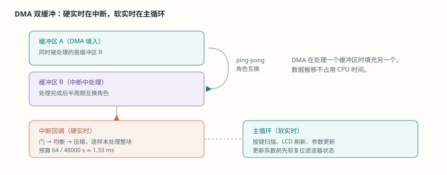

Capstone · Realtime Audio / 28
综合项目：实时音频处理器
把噪声门、三段参量均衡与压缩器串成一条实时链路，走完从浮点原型、定点转换、C 实现到嵌入式部署与测试的完整流程。
从“学了”到“会做”
前 27 章把知识体系铺开；本章把它们收敛到一个可交付的系统上：一个实时音频处理器，包含噪声门、三段参量均衡与动态压缩。目标是走完从数学公式到代码、再到真实硬件上运行嵌入式程序的完整流程。
整个过程分为四个阶段：浮点原型（验证算法与参数）、定点转换（匹配硬件数值格式）、C 实现与实时优化（满足每块的处理预算）、嵌入式部署与测试（中断驱动与性能验收）。每一阶段都用前 27 章学过的知识。
项目需求
| 模块 | 作用 | 对应知识 |
|---|---|---|
| 噪声门 | 低于阈值时削减，消除本底噪声 | 包络检测、增益平滑 |
| 参量均衡 | 三段（低搁架 / 峰化 / 高搁架）独立调节 | 第 10 / 23 章双二阶 |
| 压缩器 | 高于阈值时按比率削减增益 | 第 23 章动态处理 |
目标平台为带 FPU 的 Cortex-M4（如 STM32F4），采样率 48 kHz，块大小 64 个样本，因此每块的处理预算为 64/48000 ≈ 1.33 ms。验收上关注三类可测指标：实时性（每块处理时间小于预算）、保真度（定点相对浮点的 SNR）、以及频响误差（均衡与设计目标之差）。本章不给出 THD+N 或 SNR 的具体门限数字，因为它们强依赖具体编解码器与板级设计，应以实测为准。
浮点原型
黄金法则是先在浮点域验证算法：此阶段只关心正确性与参数调优，不关心实时性。

噪声门的静态增益可写成分段形式，软拐点避免门限附近反复开关：
式（1）：T 为门限，F_dB 为衰减地板。例程验证门限以上增益 0 dB、门限以下衰减到地板。
压缩器的静态增益则在阈值以上按比率削减：g_dB = −(x−T)·(1−1/R)。当 R=4 时，高出阈值 12 dB 会被压掉 9 dB——例程用这一点做了断言。均衡部分沿用第 23 章的 RBJ 峰值系数，验证 6 dB / Q=1 峰化段中心增益恰为 6 dB，且 DC 与 Nyquist 增益为 0 dB。
定点转换
音频样本通常用 Q1.15（16 位有符号，范围 [−1, 1)），滤波器系数用 Q2.14（防中间溢出）。子部分用转置直接 II 型（DF2T）结构：状态少、数值稳定，适合定点。

系数量化误差直接影响极零点位置，可用网格步长约束：
式（2）：例程将浮点与定点双二阶在同一测试信号上对比，得到约 65 dB SNR；限制来自 Q2.14 系数量化与每位舍入。
三点需要特别防范：溢出（高增益频段中间值超过 ±6 倍，需 32 位累加与饱和）、系数精度（低频高 Q 滤波器 a₁ 接近 −2，量化误差对极点位置影响很大）、极限环振荡（零输入时可能出现不收敛的小幅振荡，可用零输入检测强制清零）。上例的 65 dB 低于 16 位理想动态范围，正是这三类误差叠加的结果；提高累加位宽或系数字长可提升它。
C 实现与实时优化
完整链路在一个音频回调里逐样本执行。48 kHz / 64 样本下每秒触发 750 次，每次预算约 1.33 ms，三个模块的处理时间总和必须小于它。
可用的优化手段：使用 ARM 的 CMSIS-DSP 库（经汇编优化的级联双二阶、FFT、统计函数）；把 RMS 检测放到块级计算一次、整块共用同一增益，避免逐样本平方和；用 DMA 双缓冲消除数据搬移开销。这些都不改变算法，只减少每块的实际运算量。
嵌入式部署
部署到 MCU 后，常用中断驱动的前后台架构：音频处理放在 DMA 中断回调（硬实时），主循环只负责按键与参数更新（软实时）。

一个易被忽略的细节：当均衡参数在运行中改变时，新旧系数切换会造成瞬态爆音——因为滤波器状态变量与新系数不再匹配。常见做法是在切换前对滤波器做一次软复位（清除状态变量）；对毫秒级的短暂中断，人耳几乎无法察觉。
系统测试
“跑起来”不等于“验收通过”。交付前应覆盖静态指标、动态行为与长时间稳定性三类测试。
| 测试项 | 方法 | 关注点 |
|---|---|---|
| 频响曲线 | 扫频，记录输出幅度 | 与设计目标偏差；通带内是否平坦 |
| 谐波失真 | 单音输入，分析输出谱 | 失真产物与噪声底 |
| 延迟 | 脉冲响应测量输入到输出时差 | 块大小 + 算法延迟是否满足预算 |
| 定点保真度 | 同一信号过浮点与定点，比较 SNR | 定点相对浮点的失真是否可接受 |
| 长时间稳定 | 连续运行，监控丢帧与温度 | 零丢帧；无极限环、无参数跳变爆音 |
| 主观听音 | 人声、乐器、白噪声素材 | 无卡顿、无爆音、参数变化平滑 |
没有专业音频分析仪时，也可以用声卡录制输出、导入分析软件做 FFT 与电平统计，得到可用的频响与失真数据。
交互：噪声门静态曲线
下面画出噪声门的输入-输出静态曲线（均以 dBFS 计）。拖动滑块改变门限：门限以上青线跟随输入（增益 0 dB），门限以下被压到地板，带一段软拐点。
动手验证：改变噪声门门限
交互仅辅助观察；式（1）与确定性程序在 JS 关闭时仍可独立理解。
完整可执行例程（28_project.py）：断言峰化段中心增益 6.0000 dB、门与压缩器静态曲线取值正确、定点双二阶相对浮点 SNR 约 65 dB（> 60）、以及 64 样本块的实时预算 1.333 ms。
课程总结
从离散时间信号到采样、变换、滤波器、多速率、自适应、谱估计、实现与领域应用，28 章构成的是一张可互相引用的知识地图，而不是孤立的知识点清单。
| 部分 | 章节 | 核心内容 |
|---|---|---|
| 基础理论 | 01–06 | 信号与系统、采样定理、Z 变换、频域分析 |
| 变换与滤波 | 07–11 | DFT/FFT、FIR/IIR 设计、滤波器结构 |
| 多速率与统计 | 12–18 | 抽取/内插、滤波器组、自适应、谱估计、时频分析 |
| 工程实现 | 19–22 | 仿真与验证、定点、嵌入式、FPGA |
| 领域应用 | 23–27 | 音频、通信、图像、AI 融合、软件无线电 |
| 综合实战 | 28 | 门 + 均衡 + 压缩的实时音频处理器全流程 |
本项目的价值不在代码量，而在它把前 27 章的每一个概念都接上了一条链：采样与块大小时限、双二阶与系数精度、自适应/动态处理的静态曲线、定点与实时预算。把这条链亲手跑通一遍，才算真正完成从“学了”到“会做”的跨越。
参考资料
- Robert Bristow-Johnson · Audio EQ Cookbook（W3C 归档）：双二阶搁架/峰值系数与预畸变约定。
- ARM CMSIS-DSP 文档：级联双二阶、FFT 与统计函数的接口与数值约定。
- MIT OCW · Discrete-Time Signal Processing：量化噪声、滤波器结构与定点实现基础。